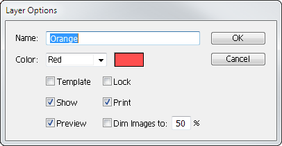

Using layers in Adobe Illustrator07/07/15

Managing shapes effectively when creating a vector image helps you avoid mistakes and increase productivity. The best way to manage shapes in Illustrator is to create layers for different shape categories.
Illustrator provides a single layer by default. This suits simple designs, but most logos have multiple shapes, gradient effects, and other aspects that can a nightmare to manage on one layer.
Think of each layer like a sheet of tracing paper. By creating a layer for each shape category you can apply changes that only affect a single category. For example, you could hide a layer to reveal smaller objects that were previously obscured or lock a layer to restrict editing.
First let’s learn how to add new layers.
Adding a new layer
To add new layers:
-
Select Window > Layers.
The Layers panel is displayed.

-
Click
 .
.
The new layer is displayed. -
Double-click the layer.
The Layer Options window is displayed.
 - Rename the layer.
-
Choose a colour for the layer by either:
- selecting a colour from the Color drop-down list
- double-clicking the coloured box and selecting a colour.
-
Click OK.
The new layer is created.
Features of the Layers panel
Now we have created a layer there are a few features of the Layers panel you need to know about. You can:
- Click the Toggle Visibility icon () to determine whether a layer is displayed. This is useful focusing on layers without the distraction of objects from other layers.
- Click the Toggle Lock box () to determine whether the layer is locked. You will not be able to make any changes when the layer is locked.
- Click to list the component objects on the selected layer.
- Double-click the layer title to access the Layer Options window.
- Click the Target icon () to target all the objects on the layer. This is useful for applying effects.
- The Selection icon () indicates whether there are objects selected on a layer.